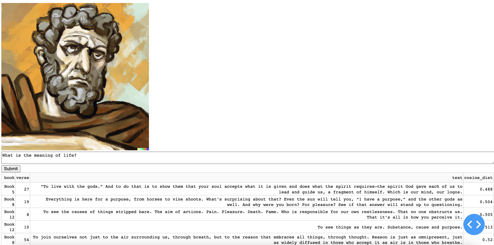

What would Marcus Aurelius say?
Introduction
This is a writeup for software I wrote that can be downloaded here. Please follow the instructions in the link.
Stoicism is a philosophy that dates back to the 3rd century BC in Athens. It revolves around the pursuit of virtue rather than pleasure, and living in accordance with nature, to sum up a beautifully complicated philosophy that cannot be summed up in a single sentence. I got into stoicism after I found Tim Ferriss's posts and videos on it. It appealed to me because a lot of it seems to be centered on being resiliant to pain and misfortune rather than fearing it. One stoic philosopher, Seneca, instructed that one must actively practice misfortune to harden yourself to it. Fast for a few days. Sleep on the floor rather than the bed for a night. Another common practice is negative visualization, where you purposely imagine the worst possible things that could happen to you today, or on the upcoming vacation, or whatever. Then if something bad happens, it probably won't be as bad as whatever you imagined. Another common practice is to meditate on your own mortality. Steve Jobs embodied this one after his cancer diagnosis, as he explains in an amazing Stanford commencement speech in 2005. This is not meant to be a comprehensive overview of stoicism. Again, there are many stoic philosophers each with their own take. It's meant to just give you a flavor of what stoicism is.
Marcus Aurelius and the Meditations
One thing that is particularly interesting about stoic philospher is that one of the so-called main stoics was an emperor of Rome, Marcus Aurelius. There is an amazing video lecture on Marcus Aurelus and Stoicism by Professor Michael Sugrue that you should absolutely watch. He is described as a man who could have literally anything he wants during his 19 year rule as the leader of the most powerful empire in the world. Money, women, alcohol by the boatload, you name it. But he didn't have any of it, and focused only on his duty of ruling Rome. From the video: "Lord Acton said that power corrupts, and absolute power corrupts absolutely. And that's generally speaking, true. The difficulty with that generalization… is Marcus Aurelius." And also: He's not afraid of being dead. He's not afraid of being in pain. He's not afraid to have people laugh at him. He's only afraid of doing what's wrong. He's only afraid of making chaos of his soul." Marcus Aurelius wrote in a journal, where from my reading of it, he was trying to fire himself up for the day's upcoming challenges. He did not want the journals to be published. After he died, they were published anyway in a book called Meditations. It is now considered one of the main books on stoic philosophy, and one of my favorite books.
Meditations reads like a series of aphorisms. It is divided into 12 books, and each book is divided into "verses." Each verse is a self-contained nugget of wisdom. In this regard, I would love to be able to conjure up a verse of the Meditations that is relevant to a given situation in my life. One way to do this is to read the book many times, and study it intensely. I have done that, but I am nowhere near having internalized the whole thing. Other stoic philosopher/explainers like Ryan Holiday are particularly good at finding relevant stoic wisdom given particular situations. I was wondering if there was a tool that could help me (and others) on my journey into stoic philosophy.
Semantic search
It turns out that modern AI language models are very good at determining, at a topic/context level, whether two sentences are similar to each other, and how similar. There is a large subfield of Natural Languge Processing that revolves around what is called "semantic search." Given a particular sentence, find the nearest (most relevant) other sentence given a list. Another way to think of this is taking sentences and turning them into a map where sentences that are similar to each other are grouped near each other on a map. I have done this with news articles and GWAS associations. Here, I do it with Meditations.
I took each book and verse of the Meditations and used it as input to the all-mpnet-base-v2 model within the sentence-transformers python package. The model turns each book/verse into a 768 dimensional vector. In my news articles and GWAS associations use cases, I then turn this into an interactive map. Here, I keep everything in high dimensional space. I then enter a question, like "What is the meaning of life?" This question gets used as input into the same model, and out comes a 768 dimensional vector corresponding to the question. Now, we can't visualize space above three dimensions by definition but we can do math on it. We can calculate who is nearby. Accordingly, starting with the 768 dimensional vector corresponding to the question, I figure out the nearest neighbors according to cosine distance (to handle the curse of dimensionality). These are then listed as the answers to the question.
Like any of these complicated models, one of the best things we can do is simply get intution by examples. Below are several questions that I ask the model, and the book/verse that comes out.
Marcus Aurelius Q&A: Semantic search of Meditations
Below is an example of what the software looks like upon asking it the first question on the list. Note that there is a search bar, where you type your question in. The results are outputted as a table below that, in order of relevance. The cosine distance is given as well, to give the user intution around the relevance of each answer. I'll also note that the Marcus Aurelius picture was created with DALL-E 2.

What is the meaning of life?
Cosine distance of best answer: 0.488
Book 5:27
“To live with the gods.” And to do that is to show them that your soul accepts what it is given and does what the spirit requires—the spirit God gave each of us to lead and guide us, a fragment of himself. Which is our mind, our logos.
Book 8:19
Everything is here for a purpose, from horses to vine shoots. What’s surprising about that? Even the sun will tell you, “I have a purpose,” and the other gods as well. And why were you born? For pleasure? See if that answer will stand up to questioning.
Book 12:8
To see the causes of things stripped bare. The aim of actions. Pain. Pleasure. Death. Fame. Who is responsible for our own restlessness. That no one obstructs us. That it’s all in how you perceive it.
How do I pursue a life of virtue?
Cosine distance of best answer: 0.374
Book 7:31
Wash yourself clean. With simplicity, with humility, with indifference to everything but right and wrong. Care for other human beings. Follow God.
Book 8:5
The first step: Don’t be anxious. Nature controls it all. And before long you’ll be no one, nowhere—like Hadrian, like Augustus. The second step: Concentrate on what you have to do. Fix your eyes on it. Remind yourself that your task is to be a good human being; remind yourself what nature demands of people. Then do it, without hesitation, and speak the truth as you see it. But with kindness. With humility. Without hypocrisy.
Book 2:5
Concentrate every minute like a Roman—like a man—on doing what’s in front of you with precise and genuine seriousness, tenderly, willingly, with justice. And on freeing yourself from all other distractions. Yes, you can—if you do everything as if it were the last thing you were doing in your life, and stop being aimless, stop letting your emotions override what your mind tells you, stop being hypocritical, self-centered, irritable. You see how few things you have to do to live a satisfying and reverent life? If you can manage this, that’s all even the gods can ask of you.
How do I deal with fear of death?
Cosine distance of best answer: 0.323 (quite low…suggests that it's a relevant question)
Book 4:50
A trite but effective tactic against the fear of death: think of the list of people who had to be pried away from life. What did they gain by dying old? In the end, they all sleep six feet under—Caedicianus, Fabius, Julian, Lepidus, and all the rest. They buried their contemporaries, and were buried in turn. Our lifetime is so brief. And to live it out in these circumstances, among these people, in this body? Nothing to get excited about. Consider the abyss of time past, the infinite future. Three days of life or three generations: what’s the difference?
Book 8:58
Fear of death is fear of what we may experience. Nothing at all, or something quite new. But if we experience nothing, we can experience nothing bad. And if our experience changes, then our existence will change with it—change, but not cease.
Book 10:29
Stop whatever you’re doing for a moment and ask yourself: Am I afraid of death because I won’t be able to do this anymore?
Book 7:56 (one of my favorites)
Think of yourself as dead. You have lived your life. Now take what’s left and live it properly.
How do I become more courageous?
Cosine distance of best answer: 0.442
Book 8:5 (note that this is a repeat from the life of virtue question)
The first step: Don’t be anxious. Nature controls it all. And before long you’ll be no one, nowhere—like Hadrian, like Augustus. The second step: Concentrate on what you have to do. Fix your eyes on it. Remind yourself that your task is to be a good human being; remind yourself what nature demands of people. Then do it, without hesitation, and speak the truth as you see it. But with kindness. With humility. Without hypocrisy.
Book 7:58
In all that happens, keep before your eyes those who experienced it before you, and felt shock and outrage and resentment at it. And now where are they? Nowhere. Is that what you want to be like? Instead of avoiding all these distracting assaults—leaving the alarms and flight to others—and concentrating on what you can do with it all? Because you can use it, treat it as raw material. Just pay attention, and resolve to live up to your own expectations. In everything. And when faced with a choice, remember: our business is with things that really matter.
Book 5:3 (Would Marcus Aurelius be cancelled on Twitter?)
If an action or utterance is appropriate, then it’s appropriate for you. Don’t be put off by other people’s comments and criticism. If it’s right to say or do it, then it’s the right thing for you to do or say. The others obey their own lead, follow their own impulses. Don’t be distracted. Keep walking. Follow your own nature, and follow Nature—along the road they share.
How do I deal with pain and misfortune?
Cosine distance of best answer: 0.339
Book 7:64
For times when you feel pain: See that it doesn’t disgrace you, or degrade your intelligence—doesn’t keep it from acting rationally or unselfishly. And in most cases what Epicurus said should help: that pain is neither unbearable nor unending, as long as you keep in mind its limits and don’t magnify them in your imagination. And keep in mind too that pain often comes in disguise— as drowsiness, fever, loss of appetite. . . . When you’re bothered by things like that, remind yourself: “I’m giving in to pain.”
Book 8:36
Don’t let your imagination be crushed by life as a whole. Don’t try to picture everything bad that could possibly happen. Stick with the situation at hand, and ask, “Why is this so unbearable? Why can’t I endure it?” You’ll be embarrassed to answer. Then remind yourself that past and future have no power over you. Only the present—and even that can be minimized. Just mark off its limits. And if your mind tries to claim that it can’t hold out against that. . . well, thea heap shame upon it.
Book 8:28
Either pain affects the body (which is the body’s problem) or it affects the soul. But the soul can choose not to be affected, preserving its own serenity, its own tranquillity. All our decisions, urges, desires, aversions lie within. No evil can touch them.
Book 6:38
Keep reminding yourself of the way things are connected, of their relatedness. All things are implicated in one another and in sympathy with each other. This event is the consequence of some other one. Things push and pull on each other, and breathe together, and are one.
What is love?
Cosine distance of best answer: 0.59 (Not great. Maybe Marcus Aurelius doesn't have much to say about love).
Book 8:11
What is this, fundamentally? What is its nature and substance, its reason for being? What is it doing in the world? How long is it here for?
Book 7:57
To love only what happens, what was destined. No greater harmony.
Book 12:10
To see things as they are. Substance, cause and purpose.
What are the most important things in life?
Cosine distance of best answer: 0.509
Book 4:17
Not to live as if you had endless years ahead of you. Death overshadows you. While you’re alive and able—be good.
Book 6:15
Some things are rushing into existence, others out of it. Some of what now exists is already gone. Change and flux constantly remake the world, just as the incessant progression of time remakes eternity. We find ourselves in a river. Which of the things around us should we value when none of them can offer a firm foothold? Like an attachment to a sparrow: we glimpse it and it’s gone. And life itself: like the decoction of blood, the drawing in of air. We expel the power of breathing we drew in at birth (just yesterday or the day before), breathing it out like the air we exhale at each moment.
Book 12:3
Your three components: body, breath, mind. Two are yours in trust; to the third alone you have clear title. If you can cut yourself—your mind—free of what other people do and say, of what you’ve said or done, of the things that you’re afraid will happen, the impositions of the body that contains you and the breath withia and what the whirling chaos sweeps in from outside, so that the mind is freed from fate, brought to clarity, and lives life on its own recognizance —doing what’s right, accepting what happens, and speaking the truth— If you can cut free of impressions that cling to the mind, free of the future and the past—can make yourself, as Empedocles says, “a sphere rejoicing in its perfect stillness,” and concentrate on living what can be lived (which means the present) . . . then you can spend the time you have left in tranquillity. And in kindness. And at peace with the spirit within you.
Marcus Aurelius Q&A: ask the model absurd questions.
Below, I try to toy with the model by asking questions that are either poorly stated or extremely irrelevant.
Should I have vanilla or strawberry ice cream today?
Cosine distance of best answer: 0.777 (from here on out, distances in the 0.7+ range are expected)
Book 12:35
If you make ripeness alone your good . . . If a few actions more or less, governed by the right logos, are merely a few more or less . .. If it makes no difference whether you look at the world for this long or that long . . . . . . then death shouldn’t scare you.
Book 8:22a (Maybe "today" in the question lead to a today/tomorrow association)
This is what you deserve. You could be good today. But instead you choose tomorrow.
Book 11:33 (I'm guessing "figs" was associated with "strawberry")
Stupidity is expecting figs in winter, or children in old age.
If a tree falls in the forest and no one is around, does it make a sound?
Cosine distance of best answer: 0.711
Book 8:15
Remember: you shouldn’t be surprised that a fig tree produces figs, nor the world what it produces. A good doctor isn’t surprised when his patients have fevers, or a helmsman when the wind blows against him.
Book 12:35 (Interesting…repeat from the ice cream question)
If you make ripeness alone your good . . . If a few actions more or less, governed by the right logos, are merely a few more or less . .. If it makes no difference whether you look at the world for this long or that long . . . . . . then death shouldn’t scare you.
Book 7:43 (sound -> hysterics?)
No chorus of lamentation, no hysterics.
Why?
Cosine distance of best answer: 0.772
(I really don't know what to make of the answers below. Perhaps they're in a "not contextually well defined" region of the vector space?)
Book 6:52
You don’t have to turn this into something. It doesn’t have to upset you. Things can’t shape our decisions by themselves.
Book 6:56
All those people who came into the world with me and have already left it.
Book 8:22a (repeat from the ice cream question)
This is what you deserve. You could be good today. But instead you choose tomorrow.
ergoiejrg weofijwo wefoijw
Cosine distance of best answer: 0.722 (gibberish is lower than "Why?")
Book 11:30
“. . . For you/Are but a slave and have no claim to logos.”
Book 5:4
I walk through what is natural, until the time comes to sink down and rest. To entrust my last breath to the source of my daily breathing, fall on the source of my father’s seed, of my mother’s blood, of my nurse’s milk. Of my daily food and drink through all these years. What sustains my footsteps, and the use I make of it—the many uses.
Book 5:14
The logos and its employment are forces sufficient for themselves and for their works. They start from their own beginning, they proceed to the appointed end. We call such activities ‘‘‘directed,” from the directness of their course.
Conclusions
We see in the first section of Q&A that the model does bring forth relevant answers. I'll leave it to experts like Ryan Holiday to determine how relevant. Nonetheless, we see evidence of topic-based organization rather than just does-the-verse-have-the-same-words (aka bag of words) organization. For example, one answer to "What is the meaning of life" is "Everything is here for a purpose." This suggests that the model "knew" that meaning and purpose were of the same topic. Another great instance in support of this is the "fear of death" question. Some of the answers directly had "fear of death" built in (Marcus Aurelius talks about this a lot in the book). However, one of them, "Think of yourself as dead. You have lived your life. Now take what’s left and live it properly," does not contain the phrase "fear of death" or anything similar, but rather contains the related topic of imagining yourself as dead.
The above paragraph could very well be wishful thinking on my part. I therefore added a section where I asked the model loads of nonsense. There, we could at least see evidence of an attempt to topic match. While I expected garbage in/garbage out, we saw things like "If you make ripeness alone your good…" as part of an answer to "Should I have vanilla or straberry ice cream today?" where perhaps ripeness showed up as a result of the word "strawberry" in the question. Except that (not shown) the same "ripeness" answer comes up when I simply ask "Should I have ice cream today." Wishful thinking on my part. With the question "If a tree falls in the forest and no one is around, does it make a sound?" we see answers that contain the topic of trees and the topic of "hysterics" which may correspond to sound. But again, to really get at what's going on for these irrelevant questions, I'd have to do a series of ablation experiments (eg. remove "tree" and "forest," remove "sound") and for situations where the cosine distance of the best answer is high, this doesn't sound worthwhile.
What about when I ask the model pure gibberish? When the question is "ergoiejrg weofijwo wefoijw" it still maps to the model somehow. In this case, the cosine distance is high. Curiously, the cosine distance of the gibberish question is LOWER than the cosine distance of the simple question "why" and the ice cream question! This suggests that there is some threshold of cosine distance where the answer is going to be meaningless. We could use a gibberish question as a "gibberish answer" threshold accordingly. On the opposite end of the spectrum, remember that in the case of the question "How do I deal with fear of death?" the best answer has a cosine distance of 0.323. It might be that we can use cosine distance as a "relevance score." Care would have to be taken in each use case (other books) to figure out what the cosine distance of a relevant question is versus a gibberish question.
Overall, using AI-driven semantic search as a means to dig into Stoic philosophy seems promising. It does not replace reading the source material, but it definitely acts as a good supplement for these aphorism-centric books. Not to be Captain Obvious, but I could see this being useful in other aphorism-centric books, like the Bible, the Tao Te Ching, Nassim Taleb's Bed of Procrustes, and many, many more.